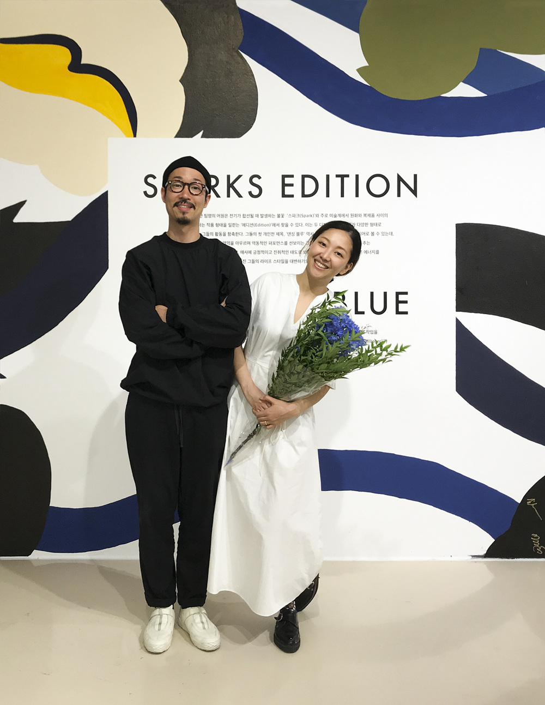

Sparks Edition is creating artwork/graphic design studio based in seoul. Our works are focused on Visual graphics (brand identity, album, book, poster, editorial, etc), paintings and sculptures.
Jun-oh Jang · Ji-hye Uh, Sparks Edition Designer Please introduce the Sparks Edition. Uh Wisdom We are a team that has been active for about 10 years. They are a designer duo who work on graphic-based designs together and work on artwork individually. How much time did it take to renew small and warm? It took about three months for the design to come out after catching up on the brand story of Jun-oh Jang. What kind of story did the Lotte and Sparks editions want to tell the brand? Uh Wisdom The most important thing in Lifestyle LAB was 'balance'. I wanted to put elements that balance and harmonize life and art. And then there was the meaning of 'support'. By saying 'Support Life And Art', it contains the message of Lifestyle LAB that supports and supports your life and art. Expanding its meaning, we are running a studio with the slogan 'Rhytmic Composition Of Your Life'. What was the first thing you two did? Jang Jun-oh The first design work with our names on it was the musician 10cm's 1st album. At that time, our team did not have a name. So while thinking about the name, I remembered Coldplay's song 'Sparks' that I had been listening to for a long time. I really liked the meaning of the word “fire” and the energy it gave me. That's why it was called 'Sparks Edition', which means to keep doing fireworks like this. It has the meaning of a Lifestyle LAB that goes back and forth between culture, art, and life. It's a job I've been given a name. With that album as a starting point, I am continuing to work on album design for several artists, such as Lee Juk, Jang Beom-jun, Loco, and BTS. In addition to this, I am continuing various work such as book design, branding and BI (Brand Identity), and event and exhibition identity planning. There is. In addition, based on our individual artwork, we are also working on graphic motifs and object inscriptions. How did you implement the design? In order to express the wisdom slogan, I worked so that the compositional elements could be seen even in the graphic motif. Also, taking advantage of the meaning of support, we also set a baseline for each design. From the development of alphanumeric typography to bulletin boards and leaflet stands, we carried out a variety of work so that all design elements that would go here and there were applied together in a practical space. When did your relationship with Lotte start? Jun-oh Jang Contacted me that the Lotte Cultural Center is preparing for the renewal of the Lifestyle LAB in 2018. They said they needed various designs including BI, so we started working together. What was the most impressive thing about your work process? Jang Jun-oh I think he's a 'person'. At Lotte, they greatly sympathized with our intentions and design. Communication was very easy while the idea developed into a design. Get support throughout the work
How would you feel? Thanks to you, it was so much fun to work with. Do you feel relieved by working to see you again by all means? Uh Ji-hye Actually, my personal work is sometimes extended to design work, and through design work, a topic that I want to think deeply about comes to mind. It's such a different process, but it's really fun when these two go together. So I want to keep doing it. want. The relationship with Lotte Department Store has continued after Lifestyle LAB. The first exhibition of the SPAX edition called Uh Ji-hye DANCING BLUE) was held at the Avenuel Art Hall of Lotte Department Store. At the time of the opening, 10cm performed a performance, and how much time do we usually spend on individual work on the site? Uh Wisdom It's hard to do personal work faithfully when you're busy. So, I created a community with my fellow artist friends and also showed off my own live drawings that I did in two weeks. Recently, PARTICLE), an exhibition of modeling work by designer Jun-oh Jang, was installed in the main store of Lotte Department Store, and the relationship continues. In a way, seeing our artistic diversity, we take time to discuss our work and think about new areas. I think that process whips our senses. It is no exaggeration to say that it is being shown along with Lotte Department Store. So the 10 years of the Sparks Edition have passed. How has it changed 10 years ago and today? Jang Jun-oh Well, I don't think much has changed. Although my skills have improved, the way I treat my work is the same. There are two things we wanted to protect from the very beginning: to treat our work with sincerity and to make it more enjoyable than anyone else. Even after 10 or 20 years have passed, Lotte Department Store and Sparks Edition have the same direction in 'public', 'art' and 'culture'. Jang Jun-oh Lotte Department Store attracts a variety of people, young and old, due to its nature as a department store. That's why I think I'm trying to communicate and worrying about it in various ways. We also present our own artwork, but we also design for the public. It must be a branch full of artistic sense. Seeds spread out as a design for many people. Such attempts seem to be the point where Lotte Department Store and us are right. To gently lower the boundaries of art, culture and the public. In the next 10 years, is there anything you two want to achieve? Uh Ji-hye I want to communicate with more people through various art works, because this is the ultimate purpose of designing. I think it is still on the path to that road. Maybe it was the first time the process was difficult? That Jang Jun-oh was just chasing interesting things and interesting things. So I was able to get stronger. The reason we have been able to come so far is probably because of our connections with people who have the same purpose as us. Nevertheless, there are definitely clients in design work. Also, you cannot ignore the mood or code of the client. Maybe design is communication and development through communication, so if we continue our work, we will be able to achieve our goal someday. Oh Ji-hye Jang Jun-oh What do you want to achieve together, and what do you want each of you to do? The word 'balance of life' that we wanted to include in Lifestyle LAB is also what we want to say to us more than anyone else. It's like a work of life, design, and art. Because the ideology I have has to convince my clients and everyone who witnesses this. In fact, 'I get tired of repeating a series of processes. At that time, I want to live tomorrow with the right balance in the client area. And take the time to look inside while doing no personal work. We give support to us and to all those who pursue such a life.
We love getting email about our work, commission, collaboration and everything else is very welcome.